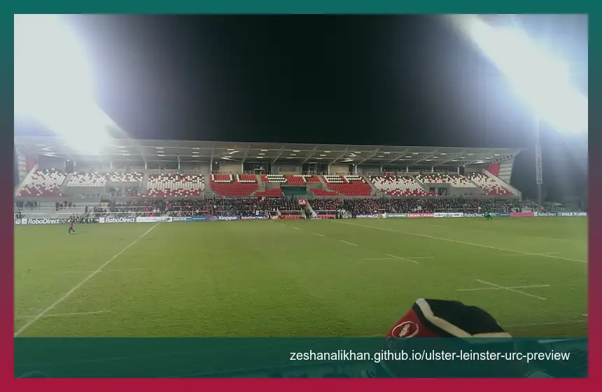

One-point table gap
URC's public table snapshot during research showed Ulster on 47 and Leinster on 46, which gives the match a clear playoff-positioning feel.
Ulster host Leinster at Affidea Stadium on Friday, April 17, 2026, with kickoff listed at 7:45 PM local Belfast time. For readers in the United States, that is 2:45 PM ET. The useful angle is simple: an Irish inter-pro derby with Ulster and Leinster separated by one point in the URC table snapshot from research day.
This is not just another Round 15 listing. Ulster's official build-up frames it as inter-pro derby week at Affidea Stadium, while the URC public table snapshot during research placed Ulster third on 47 points and Leinster fourth on 46. That one-point gap gives the page a real standings hook without needing to force a prediction.
Both sides also come in with European momentum. Ulster beat La Rochelle 41-24 in the Challenge Cup quarter-finals. Leinster beat Sale Sharks 43-13 in the Champions Cup quarter-finals. The derby angle is strong on its own, but the recent European results make the match feel like a proper form check too.

URC's public table snapshot during research showed Ulster on 47 and Leinster on 46, which gives the match a clear playoff-positioning feel.
Ulster are at home in Belfast, and the official Ulster build-up frames the night around an inter-pro derby atmosphere.
Ulster and Leinster both arrive after European quarter-final wins, so the form conversation is more useful than a generic rivalry label.
The live page is built from our own JSON file. That means it can show status, score fields, and short original notes without scraping or republishing official play-by-play text.
More from our sites
This page sits inside a wider set of live guides, recaps, and utility pages. Use the short list below when you want a few direct jumps without loading a crowded directory page first.
More from our sites
This page sits inside a wider set of live guides, recaps, and utility pages. Use the short list below when you want a few direct jumps without loading a crowded directory page first.